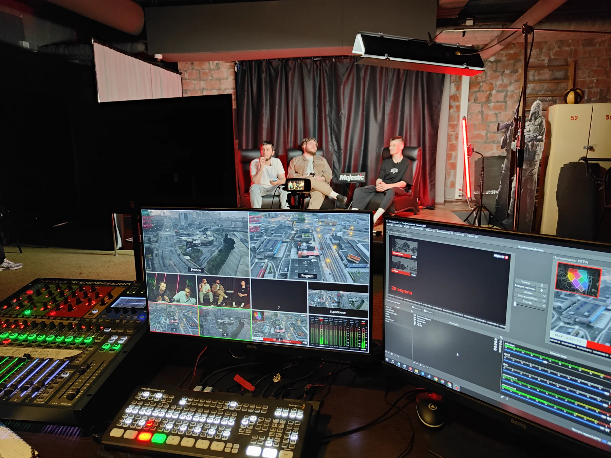
01
Прямой эфир
Собираю проект в vMix: источники, сцены, переходы, запись, стрим и резервные сценарии на случай, когда что-то падает в середине эфира.
Инженер прямого эфира
Видео, звук, графика и автоматизация. От первой коммутации до последнего титра в эфире.
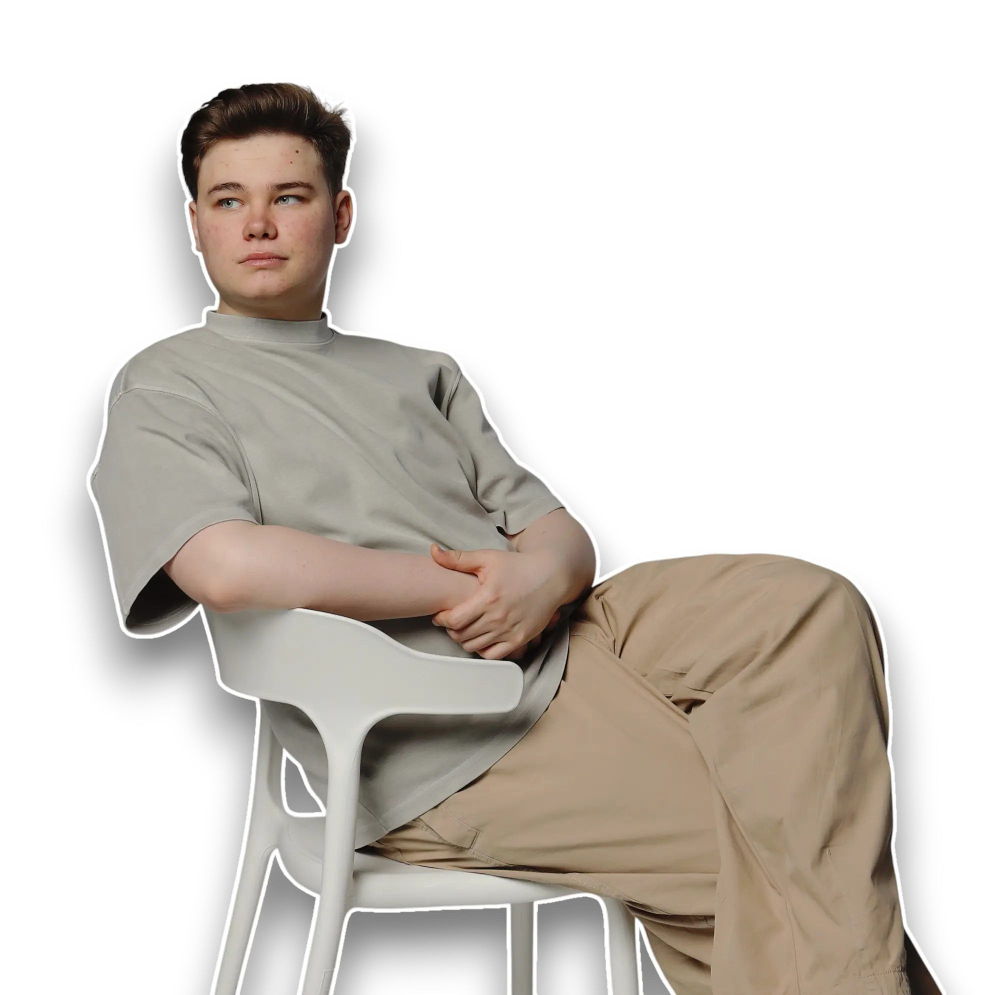
On air
Dante level 2
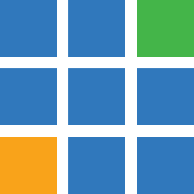
vMix Live graphics GT Title Designer Data-driven titles Google Sheets Behringer X32 Dante Level 2 SoundПонимаю, как взаимодействуют звук, видео, презентации, графика и оператор - и проектирую рабочую среду так, чтобы она держалась под нагрузкой живого события.
Четыре года собираю технический контур мероприятий: студенческие лиги и киберспорт, медицинские и деловые конференции, выездные эфиры и студийные трансляции. За это время накопилось больше тридцати проектов - от квиза на 200 человек до чемпионата мира по футболу с Winline.
Работаю там, где нельзя переснять дубль: если титр вышел не тот или звук пропал на тридцатой минуте, второго шанса нет. Поэтому строю системы, которые прощают человеку ошибку и позволяют вернуть контроль за одно нажатие.
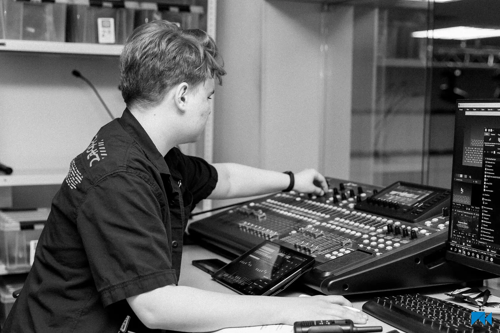
Компетенции
От сигнала на площадке до команды в эфире.

Собираю проект в vMix: источники, сцены, переходы, запись, стрим и резервные сценарии на случай, когда что-то падает в середине эфира.
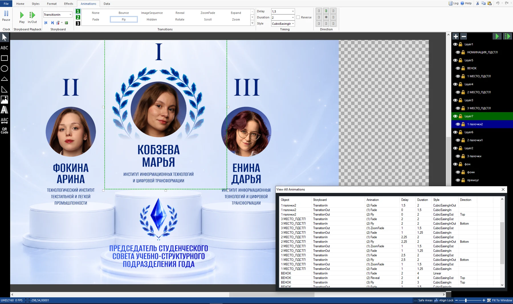
Проектирую титры в GT Title Designer и связываю их с данными, триггерами и логикой события - состав участников меняется в таблице, а не в дизайне.
Настраиваю тракт, маршрутизацию и микс отдельно для зала и для трансляции. Работаю на Behringer X32, сертифицирован Audinate Dante Level 2.
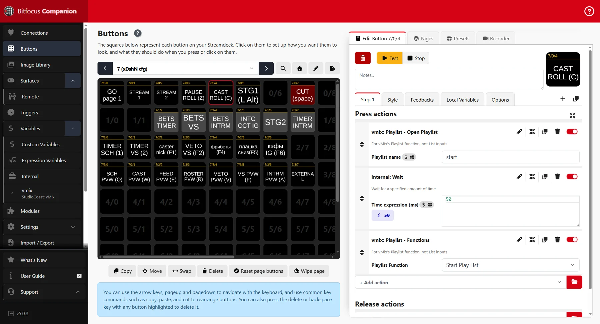
Убираю лишние ручные действия: Companion, горячие клавиши, MIDI-триггеры, скрипты и собственные утилиты под конкретную площадку.
Графика, которую лучше увидеть в движении.
Выбранный кейс 01
«Использование информационных технологий для автоматизации управления мультимедийным контентом на базе актового зала РГУ им. А. Н. Косыгина»
Нажмите на изображение, чтобы рассмотреть интерфейс и подпись
Выбранные проекты
Реальные площадки, реальные эфиры.
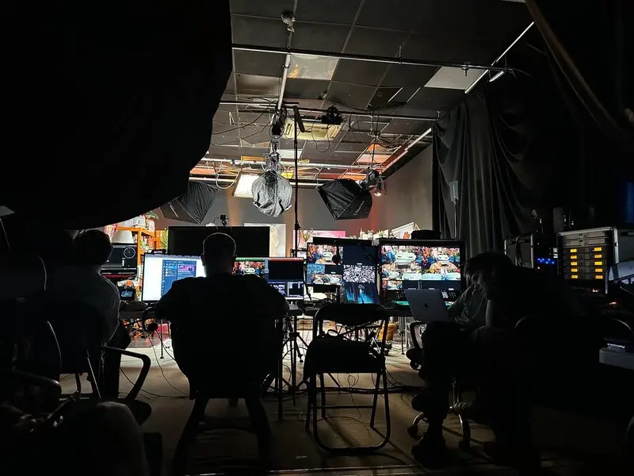
SRC 01Коммерческая трансляция
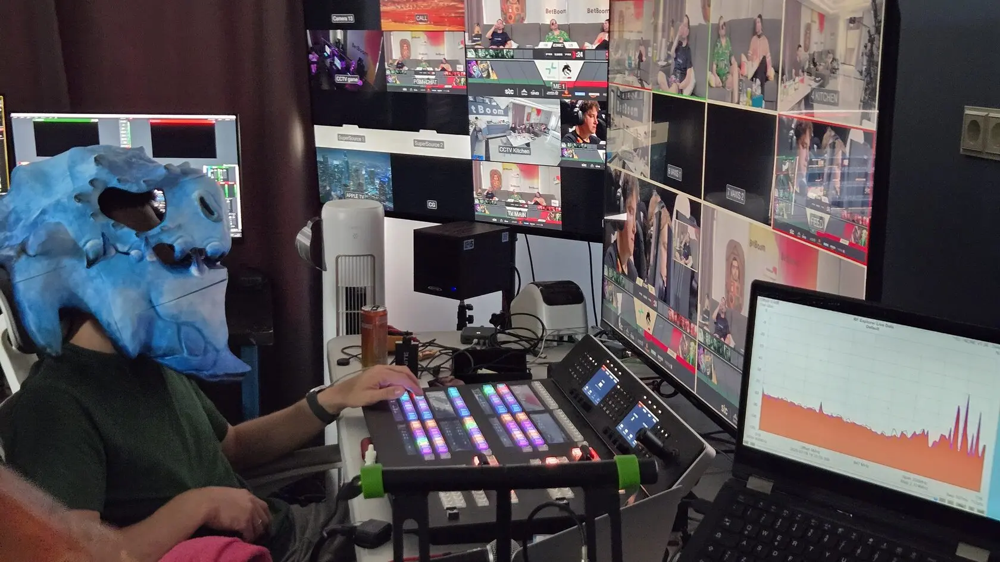
SRC 02Выездной эфир
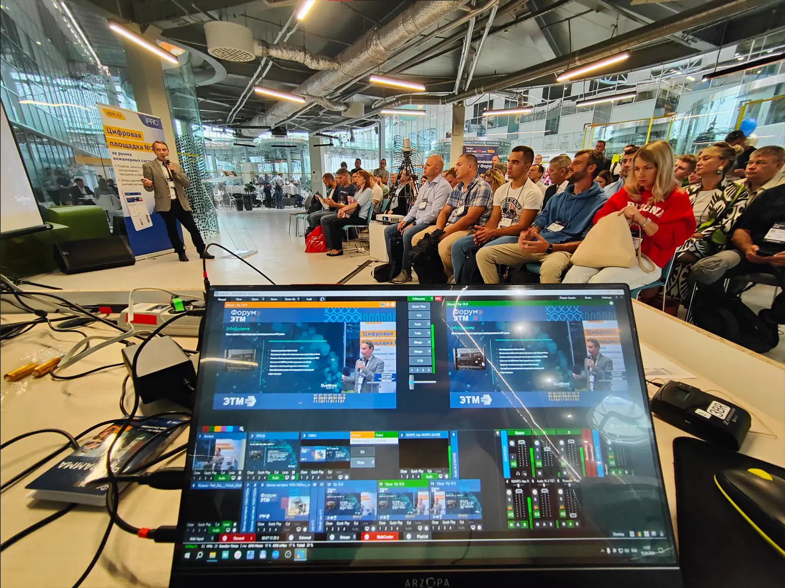
SRC 03Гибридное мероприятие
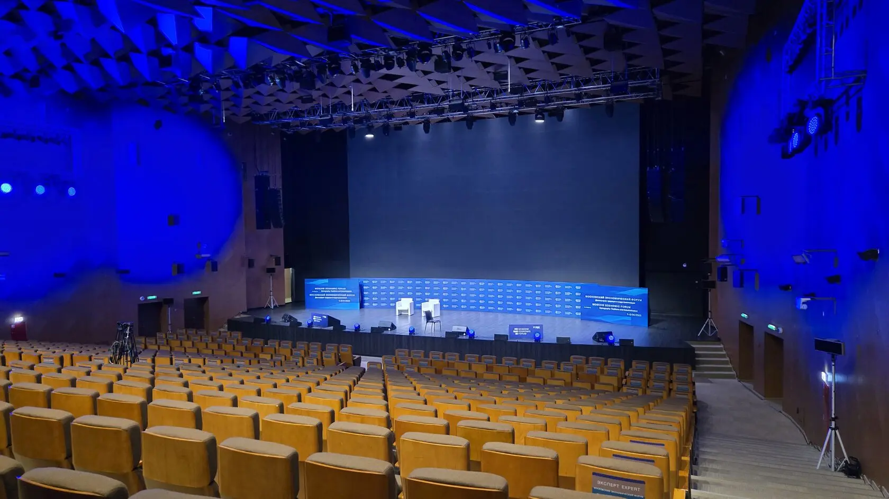
SRC 04Техническое сопровождение
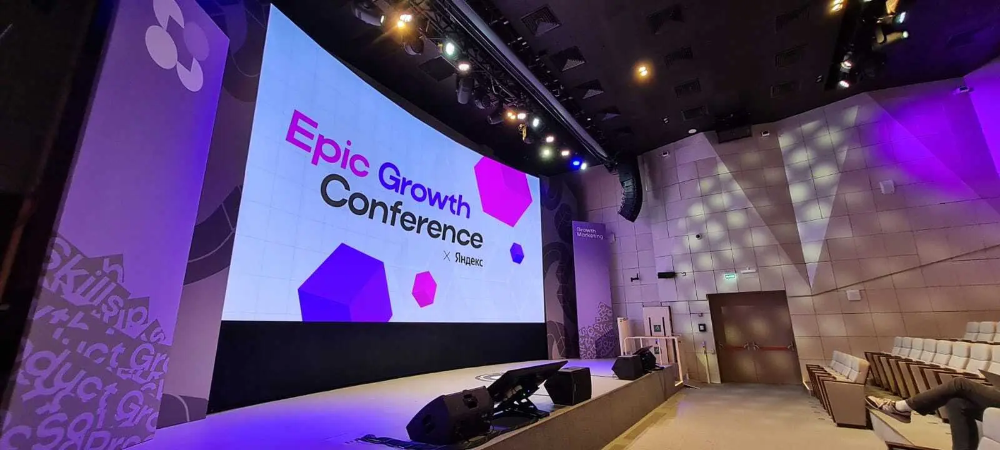
SRC 05Мультимедийная площадка
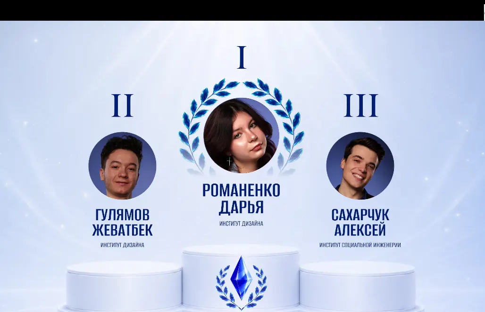
SRC 06Эфирная графика
Студийная трансляция
Полный архив
32 работы с 2022 года2022
Начало профессионального пути и первая работа с мультимедийными технологиями на студенческих мероприятиях.
2023
Практика на площадках: от подготовки тракта до управления содержимым экрана в реальном времени.
2024-25
Офлайн, онлайн и гибридные форматы: PIR EXPO, Наука 0+, SANOFI, GPHG, IT Purple Conf, Киберзарница.
2026
Сведение накопленного опыта в единую архитектуру управления мультимедийным содержимым.
Ready to connect
Могу подключиться к трансляции, мультимедийному проекту или задаче по автоматизации - от разовой площадки до постоянного технического сопровождения.